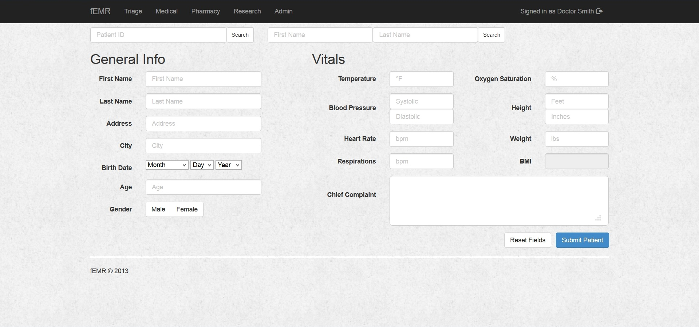
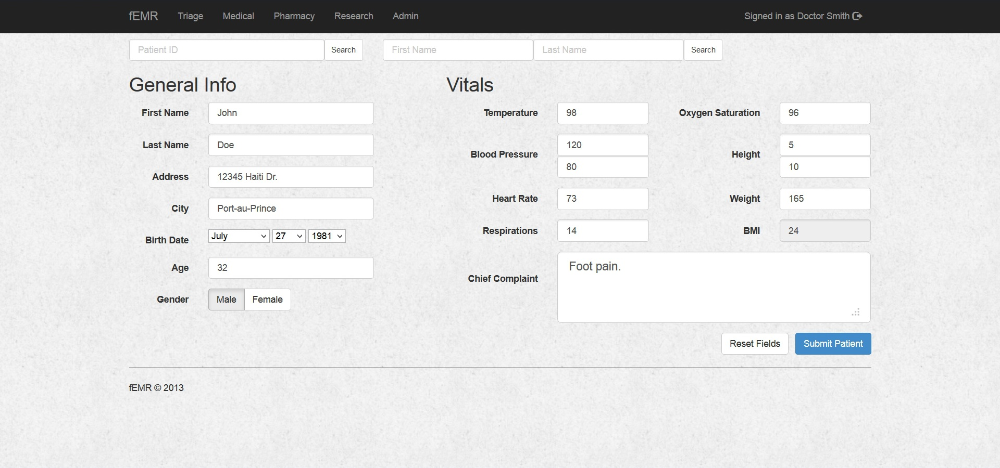
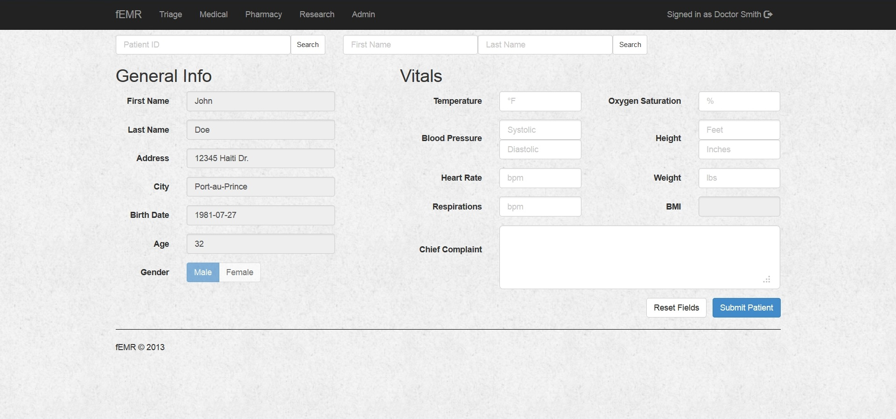
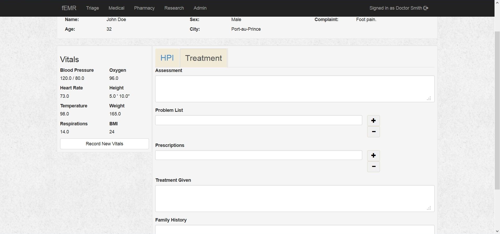
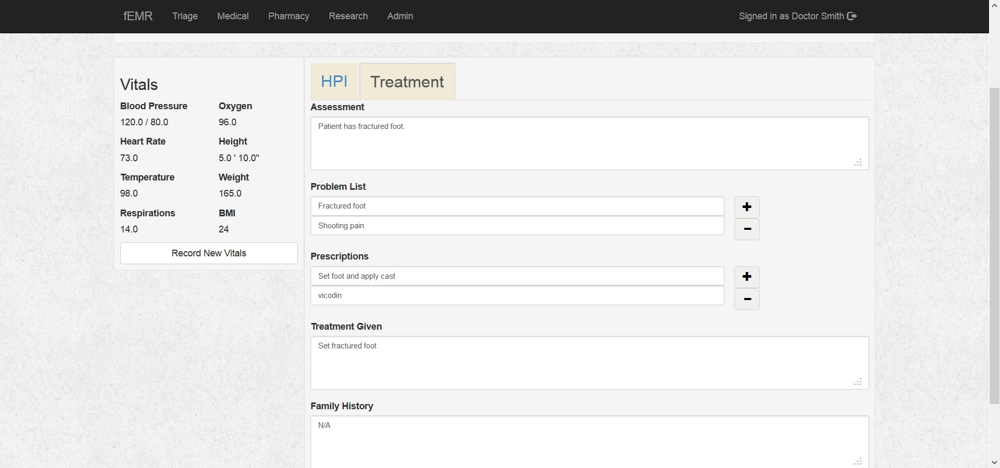
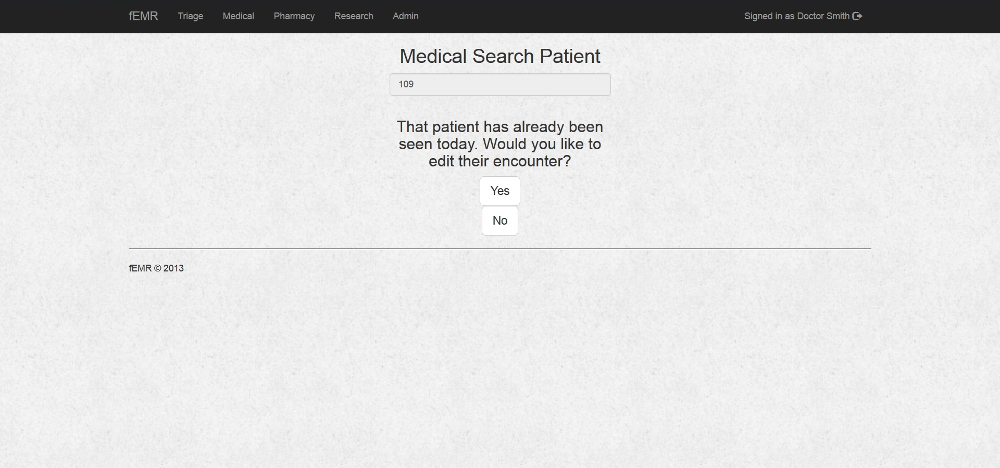

Description
fEMR is an free electronic medical record system. It is designed to help with the Wayne State University's School of Medicine's World Health Student Organization in Haiti. The goal is to become an easy EMR solution for remote clinics who depend on speed and ease of use rather than features.
Triage
• The triage station is where vitals and basic patient information is recorded. The fEMR system assists our clients by expediting this process when needed and allowing for more detailed information to be recorded should it be required.
• Patients are then given an unique ID number and instructed to present it to the physician team that they are assigned to. This unique identifier is used throughout the fEMR system to help locate patient records quickly and efficiently.
• Triage also coordinates a 'waiting area' when the physician teams become backed-up. To help alleviate the "back-up" the fEMR system is designed with speed in mind.
Triage Screen Shots
- 
- 
-

- 
Medical Screen Shots
-

-

- 
-

- 
- 
Medical
• Each medical team always consists of two members; a student doctor and a student doctor, a licensed physician and a student doctor, a registered nurse and a student doctor, etc. depending on the make-up of the group.
• For less urgent patients, these encounters can last just a few minutes, with the aim of moving on to see the next patient. The fEMR system helps facilitate these types of encounters by allowing the medical team to quickly gather all vital patient information.
• For the more urgent patients, these encounters can last many minutes up to a couple of hours. The fEMR system helps facilitate these types of encounters by allowing the medical teams not only to record patient vitals quickly, but also the medical teams to delve deeper into a patients problem areas and symptoms to record an accurate diagnosis.
Pharmacy
• This is where the patients get any medication or other items that are prescribed by the medical teams.
• The pharmacy station is often a chaotic step in the process due to the need to give patients the treatments they need but to also be sparing with an often very limited inventory.
• Many times, the exact medication prescribed by the physicians is not available and a substitute is made. The fEMR system allows for the pharmacy station to quickly change a prescribed medication to an alternative, if the primary medication is unavailable.